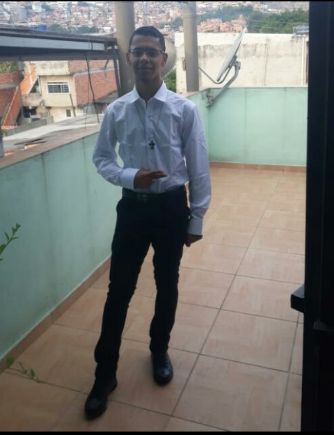
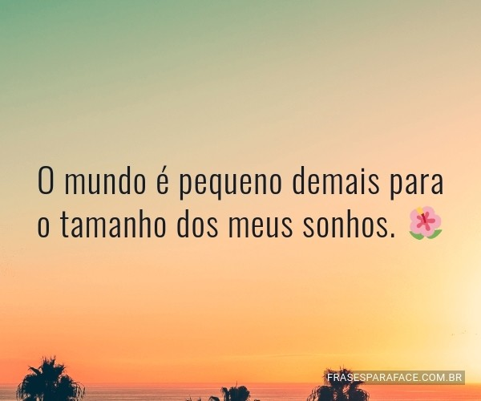
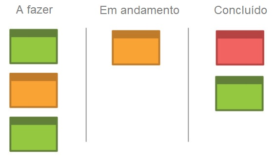
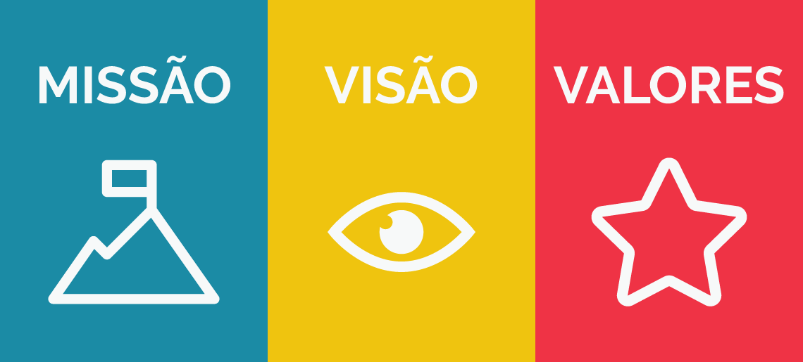
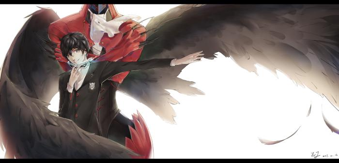

MINI CURRICULO
Vinicius da Silva Alves
Meu nome e vinicius, tenho 18 anos terminei a escola em 2019.comecei a fauldade que a de ciencias contabeis.estou gostando bastante dessa aréa.Nasci no dia 20/10/2002 recentemente fui em uma entrevista de emprego passei então to ganhando experiência.não sou muito de me envolver em certo assusto apenas fazer a minha obrigação e nada mais e depois ter meu certo descanso. me empenho nos meu afazeres, criatividade, focado, sempre buscando melhor e aprender muito mais do que já sei, quanto mais melhor.
Meus Sonhos e minhas metas
Meus sonhos e minhas crenças! o que acredito sobre a vida: A acredito que a vida tem muito a me mostrar ainda, vi tudo oq ela tem pra me mostrar e oq vou alcançar. acredito em mim mesmo que sou capaz de fazer coisas grandiosas ainda pela frente, o que importa pra ser feliz e vc mesmo saber como aproveitar cada momento da vida sem esperar algo que ira te abalar meus sonhos e metas tão sendo realizados em curto prazo medio prazo e longo prazo. curto prazo terminar faculdade e conseguir emprego na aréa, medio prazo comprar uma casa ter animais de estimação, longo prazo carro e moto.
São paulo,04 de novembro de 2002
KANBAN
o Kanban e usado para fazer uma qualificação do seus afazeres, tendo um posto de vista do que fazer melhorar e um cartão que tem uma finalidade de adiministrar o seus projetos. Ele nada mais é do que um sistema ágil e visual para controle de produção ou gestão de tarefas. Ser ágil significa permitir que as tarefas sejam gerenciadas com rapidez, acompanhando o ritmo de trabalho de equipes que possuem entregas com prazos bem apertados e que estão sempre correndo contra o tempo.
Quadro dos sonhos
esta buscando usa metas pra ir enfrente com seues sonhos esse e o meu, todos tem sonhos então porque não correr atrás e compatilhar eles.
Na pandemia
São Paulo, 19/07/2020
O que posso fazer para passa o tempo
tem variedades de coisas que posso fazer em pouco tempo para passar o meu tempo. como assitir series,dormir,conversar,estudar e jogar futebol fazer exercicio. tem as coisas de casa pra fazer limpar, colocar as coisas no seus devidos lugares, e fica lendo alguma coisa pra passar o tempo mais rapido.
Um pouco longe de casa

meu futuro daqui 10 anos
# 2030
em 2030 nunca iria imaginar oq conquistaria, ao decorrer desse tempo nunca imaginaria, aos 28 ja formando em contabilidade sendo reconhecido em controller. tenho minha casa propria, meu carro moto, animais de estimação como gato e cachorros oque mais gosto esse logo tempo batalhei muito pra chegar onde to não e facil esta aqui tem que soar muito pra conseguir ter um futuro grandioso.
ano de 2030 o ano que fica na historia
Missão, Visão e valores:
missão:
minha missão está além de apenas terminar a fauldade,podemos dizer que montar uma empresa pra ajudar minha familia em outro estado por isso to no ramo de conta por ser uma aréa que gosto muito, pra mim foi uma surpresa saber que posso abrir empresas com tipos de tributações diferentes. A verdadeira missão ainda ta por vim isso e as fases iniciais de um futuro distante.visão:
Minha visão é termianr a faculdade e entrar em outra pra não ficar em apenas uma aréa sempre melhorando ajudar minha famila quando precisar etc. tendo muitos planos para fazer ainda.valores:
honestida,moral,ética,senço de justiça,respeito, solidariedade e educação. adiquiri isso com o tempo e com muito trabalho.Pensando a comunidade em que você vive e a sociedade como um todo:
protagonista:
 O protagonista e tambem chamado de principal que tem seu maior destaque em obras ou no seu enredo de historias, sendo foca a historia principal sobre a vida dele.eu sou o protagonista da minha vida eu tomo as decisões sobre oque quero fazer, em que momento tomo uma decisão em casa as vezes sobre fazer um reparo vou dando idéia mas eu mais observo do que falo.